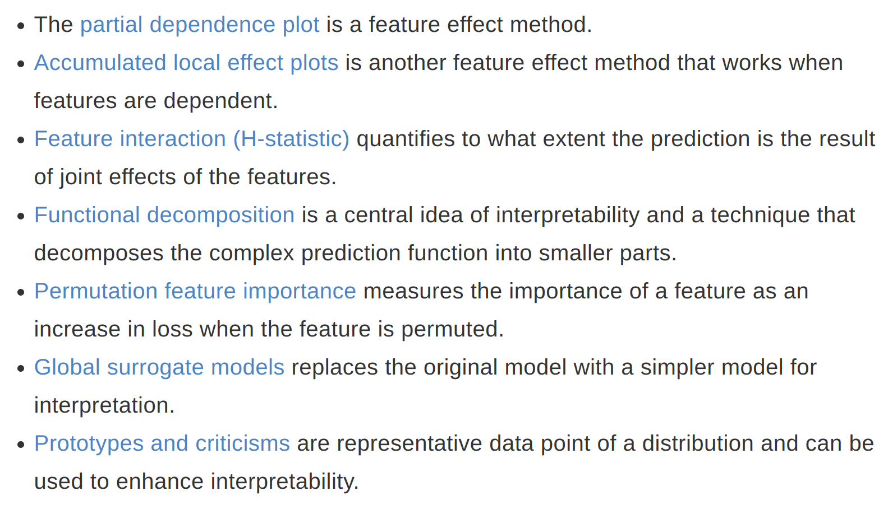
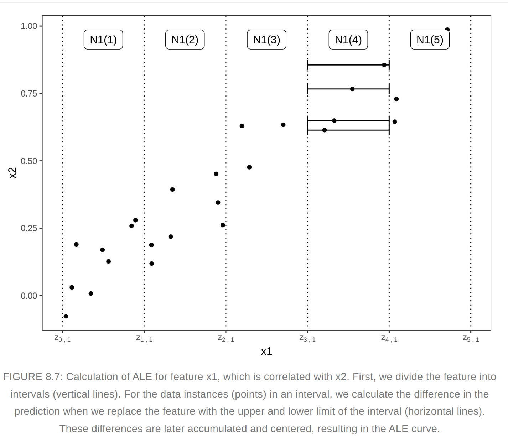
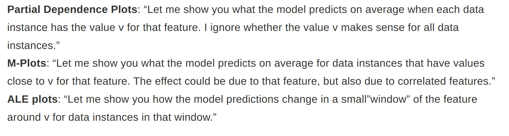
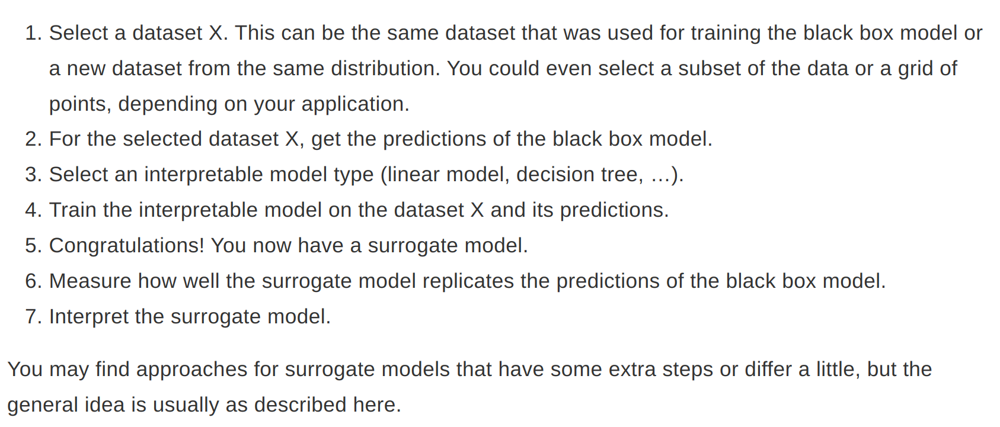
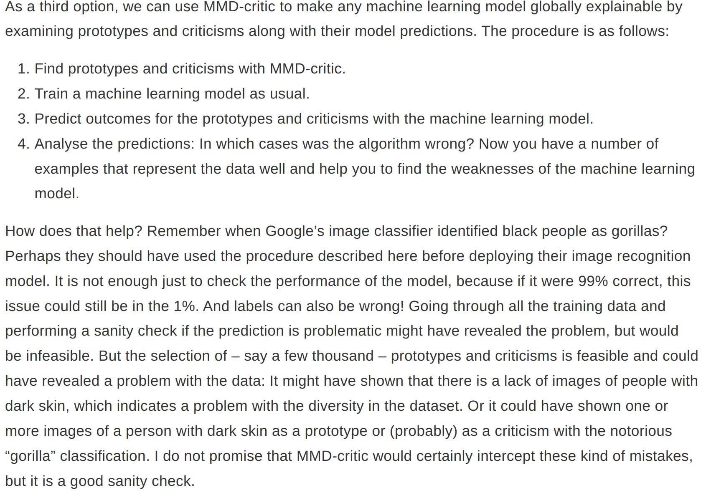

Global Model Agnostic Methods
They describe the average behavior of ml models. They are often expressed as expected values based on the distribution of the data.
Different Techniques

Partial Dependence Plot (PDP)
- PDP at a particular feature value represents the average prediction if we force all data points to assume that feature value
- It shows the marginal effect one or two features have on the predicted outcome of an ML model. Other features are not touched or considered as random
- Assumption is that the feature for which we are calculating average behavior is not correlated with other features in the dataset
- If this assumption is violated, then PDP will include data points that are very unlikely or even impossible
- For classification where we have output probabilties, PDP display probabilities for a certain class given different values for a feature
- For categorical features - For each of the category, we get a PDP estimate by forcing all data instances to have the same category and average the predictions
- Feature importance - A flat PDP indicates that the feature is not important, and the more the PDP varies, the more important the feature. This method ignores the effect of possible feature interactions.
Advantages & Disadvantages
- Easy to implement
- PDP has causal interpretation - We intervene on a feature and measure the changes in predictions
- Maximum number of features for PDP is two
- Need to look at PDP along with data distribution, omititng the distribution can be misleading because we might overinterpret regions with almost no data
- Assumption of Independence - Unlikely values or impossible values
Accumulated Local Effects (ALE)
- Faster and unbiased alternative to PDP
- ALE calculate how the model predictions change in a small window of the feature around v for data instances in that window.  
- We average the changes of predictions, not predictions itself. We accumulate the average effects across all intervals. The effect is centered so that the mean effect is zero
- This method isolates the effect of the feature of interest and blocks the effect of correlated features
- The value of ALE can be interpreted as the main effect of the feature at a certain value compared to the average prediction of the data
- Quantiles of the feature are used as the grid that defines the intervals.
Advantages and disadvantages
- ALE plots are unbiased, work for correlated features
- Faster to compute
- Interpretation of ALE plots is clear: Conditional on a given value, the relative effect of changing the feature on the prediction can be read from the ALE plot. ALE plots are centered at zero. This makes their interpretation nice, because the value at each point of the ALE curve is the difference to the mean prediction. The 2D ALE plot only shows the interaction: If two features do not interact, the plot shows nothing.
- Entire prediction function can be decomposed into a sum of lower-dimensional ALE functions
- ALE plots can become a bit shaky (many small ups and downs) with a high number of intervals
- Unlike PDPs, ALE plots are not accompanied by ICE curves
- Implementation of ALE plots are much more complex and interpretation remains difficult when features are strongly correlated.
- As a rule of thumb use ALE instead of PDP
Feature Interaction
- The interaction between two features is the change in the prediction that occurs by varying the features after considering the individual feature effects.
- H-Statistic - One way to estimate the interaction strength is to measure how much of the variation of the prediction depends on the interaction of the features
- We measure the difference between the observed partial depedence function and the decomposed one without interactions. We calculate teh variance of the output. The amount of variance explained by the interaction is used as interaction strength statistic. The statistic is 0 if there is no interaction at all and 1 if all of the variance is explained.
Advantages and Disadvantages
Backed by underlying theory, meaningful interpretation (share of variance explained by interaction), comparable across features and models
Computationally expensive, results can be unstable in case of sampling, H-statistic can be greater than 1
It does not tell how the interaction look like. Measure the interaction strength and then create a 2D PDP plot for the interactions.
We can’t use this for images
Assumption of independence of features
Variable Interaction Networks (VIN) - is an approach that decomposes the prediction function into main effects and feature interactions. The interactions between features are then visualized as a network. Unfortunately no software is available yet.
Permutation Feature Importance
- Measures the increase in prediction error after we permute the feature’s values, which breaks the relationship between the feature and the true outcome.
- This should be used on the test data
Advantages and Disadvantages
- Nice interpretation - Feature importance is the increase in model error when the feature’s information is destroyed
- Provides highly compressed, global insight
- Takes into account all interactions with other features - It takes into account both the main feature effect and interaction effects on model performance (this is also a disadvantage - This is also a disadvantage because the importance of the interaction between two features is included in the importance measurements of both features. This means that the feature importances do not add up to the total drop in performance, but the sum is larger)
- It needs access to true outcome
- If features are correlated, feature importance can be biased by unrealistic data instances
Global Surrogates
- An interpretable model that is trained to approximate the predictions of a black box model 
- R-Squared can be used to measure how well surrogate replicates the black box model
- Any interpretable model can be used as a surrogate model
- Even if the underlying black-box model changes, you do not have to change your method of interpretation
- With this method we should draw conclusions about the model and not the data
- In case of close enough R-Squared, the surrogate model may be close enough for one subset of the dataset but widely divergent for another subset.
Prototypes and Criticisms
- A prototype is a data instance that is representative of all the data
- A criticism is a data instance that is not well represented by the set of prototypes
- Prototypes and criticisms are always actual instances from the data
- K-mediods can be used to find the prototypes - Any clustering algorithm that returns actual data points as cluster centers would qualify
- MMD-Critic approach is used to find prototypes and criticisms in a single framework. This method compares the distribution of the data and the distribution of the selected prototypes. Prototypes are selected that minimize the discrepancy between the two distributions. Data points from regions that are not well explained are selected as criticisms.
- Maximum Mean Discrepancy (MMD) is used to measure the discrepancy between two distributions. The closer the MMD squared is to zero, the better the distribution of the prototypes fits the data.
- MMD, Kernel and greedy search are used to find the prototypes
- witness function is used to find the criticism. This tells us how much two density estimates differ at a particular point. Criticisms are points with high absolute value in the witness function 
- This method works with any type of data and any type of ML model
- We are free to choose the number of prototypes and criticisms
- Criticisms depend on the number of existing prototypes
Influence functions
- If we have a loss function that is twice differentiable with respect to its parameters, we can estimate the influence of the instance on the model parameters and on the prediction with influence functions.
- Instead of deleting the instance, the method upweights the instance in the loss by a very small step. Loss upweighting is similar to deleting the instance.
- Access to the loss gradient with respect to the model parameters are required
Application of Influence functions
- Understanding the weakness of a model by identifying influential instances helps to form a “mental model” of the machine learning model behavior in the mind
- Debugging model errors
- Fixing the training data
Advantages and disadvantages
- One of the best debugging tools for ML models
- Help to identify instances which should be checked for errors
- Influence functions via derivaties can also be used to create adversarial training data